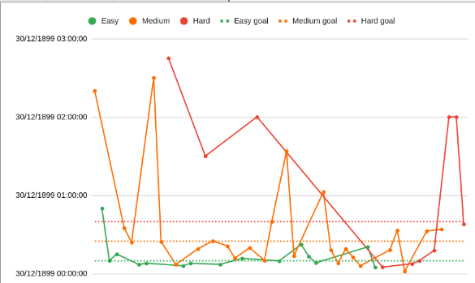

Leetcoding Journey
Beginnings
My leetcoding journey began as a part of Ravi’s Study Program. Ravi’s Study Program is a program to help enable students to develop their Software Engineering skills and appeal to companies. The program has a bit of a reputation in the Software Engineering industry in Australia, both good and bad.
RSP had us doing at least 10 leetcodes per week, aiming for a 30% - 50% - 20% split on each difficulty.
Each difficulty also had its own time limit, 10 - 25 - 40 minutes respectively.
This is a graph of my progress:

Here’s an overview of the leetcodes I completed.
| Number | Name | Easy | Medium | Hard |
|---|---|---|---|---|
| 1302 | Deepest Leaves Sum | 02:20 | ||
| 2549 | Count Distinct Numbers on Board - LeetCode | 0:50:00 | ||
| 144 | Binary Tree Preorder Traversal | 0:09:59 | ||
| 1768 | Merge Strings Alternatively | 0:15:00 | ||
| 151 | Reverse Words in a String |
0:35:00 | ||
| 238 | Product of Array Except Self | 0:24:00 | ||
| 283 | Move Zeros | 00:07:00 | ||
| 509 | Fibonacci Number | 0:08:00 | ||
| 1679 | Max Number of K-Sum Pairs | 2:30:00 | ||
| 2390 | Removing Stars in a String | 0:24:30 | ||
| 1643 | Kth Smallest Instruction | 2:45:00 | ||
| 204 | Delete the Middle of a Linked List | 0:07:00 | ||
| 374 | Guess Number Higher or Lower | 00:06:00 | ||
| 324 | Climbing Stairs | 0:08:00 | ||
| 80 | Remove Duplicates from a Sorted Array II | 0:19:00 | ||
| 135 | Candies | 1:30:00 | ||
| 36 | Valid Sudoku | 0:24:59 | ||
| 104 | Maximum Depth of a Binary Tree | 0:07:04 | ||
| 117 | Populating Next Right Pointers in Each Node II | 0:21:04 | ||
| 199 | Binary Tree Right Side View | 00:11:53 | ||
| 108 | Convert Sorted Array to Binary Search Tree - LeetCode | 0:11:43 | ||
| 2155 | All Divisions With the Highest Score of a Binary Array | 0:19:47 | ||
| 2088 | Count Fertile Pyramids in a Land | 2:00:00 | ||
| 384 | Shuffle an Array | 0:10:04 | ||
| 78 | Subsets | 0:39:52 | ||
| 520 | Detect Captial | 0:09:44 | ||
| 853 | Car Fleet | 1:33:43 | ||
| 1237 | Find Positive Integer Solution for a Given Equation | 0:13:35 | ||
| 35 | Search Insert Position | 0:22:23 | ||
| 2389 | Longest Subsequence With Limited Sum | 0:13:15 | ||
| 20 | Valid Parentheses | 0:08:19 | ||
| 450 | Delete Node in a BST | 1:02:36 | ||
| 74 | Search a 2D Matrix | 0:18:02 | ||
| 162 | Find Peak Element | 0:08:02 | ||
| 17 | Letter Combinations of a Phone Number | 0:19:02 | ||
| 46 | Permutations | 0:12:38 | ||
| 230 | Kth Smallest Element in a BST | 0:06:02 | ||
| 228 | Summary Ranges | 0:20:28 | ||
| 383 | Ransom Note | 0:04:58 | ||
| 4 | Median of Two Sorted Arrays | 0:05:02 | ||
| 11 | Container with Most Water | 0:18:08 | ||
| 1980 | Find Unique Binary String | 0:33:17 | ||
| 215 | Kth Largest Element in an Array | 0:01:48 | ||
| 23 | Merge K Sorted Lists | 0:07:35 | ||
| 295 | Find Median from Data Stream | 0:09:56 | ||
| 3 | Longest Substring Without Repeating Characters | 0:32:39 | ||
| 502 | IPO | 0:17:47 | ||
| 2966 | Divide Array Into Arrays With Max Difference | 0:33:57 | ||
| 2617 | Minimum Number of Visited Cells in a Grid | 2:00:00 | ||
| 2751 | Robot Collisions | 2:00:00 | ||
| 25 | Reverse Nodes in k-Group | 0:37:52 |